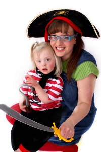

Here are two of my most popular stories. Each includes audience participation and a wide variety of signs.
An adaptation of the well known book by Julia Donaldson, the giant pirate gets some new clothes that make him the smartest in town. But when he comes accross some friends in trouble what will he do? A story about helping others. Includes lots of animal signs, focus on signs for help and thank you. Lots of audience participation and singing. Plenty of scope for follow up lesson activities.
Loosely based on Eric Carle's The Hungry Caterpillar. The children enjoy choosing food and feeding the caterpillar. Lots of scope for children to find the correct foods, can be prompted by signs, symbols or photos to aid understanding.